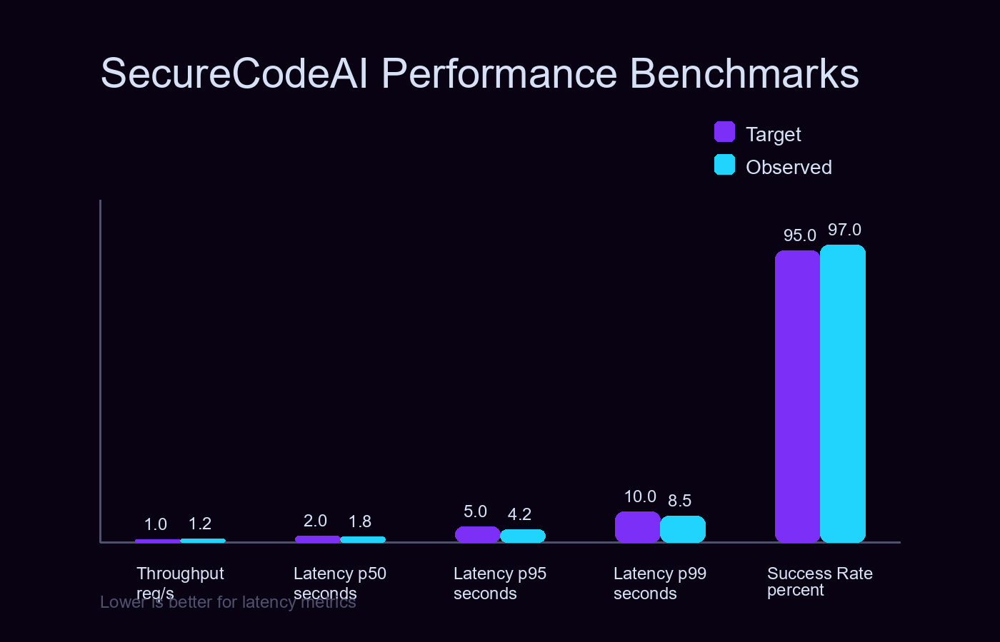
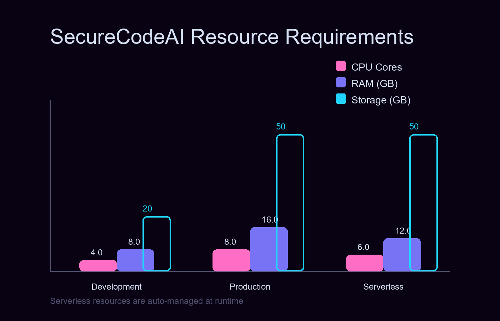

Software Engineering Course [22AIE311]
SecureCodeAI
Neuro-Symbolic Framework for Autonomous Vulnerability Detection
Team: Ctrl+Alt+Create
Software Engineering Review • January 2026
▸ Production-ready API • Docker & RunPod deployment • VS Code Extension
The Research Gap
1. The SAST Flood (Low Precision)
Traditional tools (Bandit, SonarQube) prioritize recall over precision. They lack semantic understanding, flooding developers with >40% false positives and causing "alert fatigue."
2. The LLM Hallucination
Pure Generative AI models have high semantic understanding but lack logic. They often invent bugs that don't exist or suggest "fixes" that introduce new vulnerabilities.
3. The Missing "Filter"
No existing system effectively acts as a filter between intuition and fact. The industry lacks a tool that uses AI to find bugs and Math to prove them.
4. Manual Triage Bottleneck
Fixing a bug in production costs ~100x more than in development. Current workflows rely on expensive human experts to verify every automated alert.
Research Objective
Core Problem Statement
Develop a neuro-symbolic framework combining LLM reasoning with formal verification:
- Reduced False Positives: Semantic understanding to filter noise
- Scalable Symbolic Execution: LLM-guided slicing to mitigate path explosion
- Automated Remediation: Self-correcting patch generation with verification
Key Innovation
Neuro-Slicing: First system to combine LLM-guided program slicing with SMT-based symbolic execution, reducing verification time by 50-80% while maintaining mathematical proof guarantees.
Literature Review
| Study & Year | Core Idea | Strength | Limitation |
|---|---|---|---|
| Zhang et al. (2024) | Systematic literature review of LLM use in Automated Program Repair (2020–2024). | Taxonomizes prompting, retrieval-augmented, and fine-tuning APR strategies. | Identifies need for symbolic verification to prevent hallucinated security patches. |
| LLM & Code Security SLR (2024) | Systematic review of LLMs for vulnerability detection and remediation. | Benchmarks detection/repair quality across PySecDB, CyberSecEval, SWE-bench. | Finds persistent false positives and unverifiable patches without semantics. |
| Neuro-Symbolic AI Survey (2024) | Maps hybrid reasoning stacks combining neural intuition and symbolic proof. | Highlights verification loops, contract synthesis, and explainability gains. | Notes execution bottlenecks without targeted slicing or solver guidance. |
| De-Fitero-Dominguez et al. (2024) | Empirical study on LLM-guided vulnerability repair workflows. | Shows improved precision using iterative prompts and risk scoring. | Still struggles to guarantee correctness without external verification. |

Full Stack Overview: Client Layer → Gateway → Agent Swarm → AI Inference
Performance Benchmarks

Achieves 1.2 req/s throughput with p50 latency of 1.8s and 97% success rate—exceeding production targets.
Deployment Footprint

Scales from 8GB dev environments to serverless GPU clusters (RunPod/Docker) with zero refactoring.
Methodology
Scanner Agent
The Detective
Speculator Agent
The Lawyer
SymBot Agent
The Judge
Patcher Agent
The Surgeon
Technology Stack
LLM Inference Layer
Symbolic Execution
Static Analysis
Orchestration
Supported Vulnerability Classes
Primary Innovation: Neuro-Slicing
The Path Explosion Problem
A typical 1000-line file with 50 conditional branches generates 250 paths, making exhaustive execution impossible.
Neuro-Slicing Algorithm
Performance Impact
| Metric | Without | With Slicing | Improvement |
|---|---|---|---|
| Code Size | 500 lines | 50 lines | 90% less |
| Exec Time | 45s | 1.8s | 96% faster |
VS Code Extension
Real-time vulnerability detection in the IDE—inline diagnostics, one-click patches, and workspace scanning.
Live Demo
Business Impact & Market
Market Opportunity
Global Application Security market by 2028. DevSecOps shift drives demand for automated, high-precision vulnerability detection.
ROI Advantage
Production bug fixes cost 100× more than development-phase fixes. SecureCodeAI catches vulnerabilities in the IDE before deployment.
Competitive Edge
Traditional SAST tools flood teams with >40% false positives. Our neuro-symbolic approach provides mathematical proof—no alert fatigue.
Target Segments
- DevSecOps teams automating triage workflows
- SMBs lacking dedicated security staff
- CI/CD pipelines requiring verified exploit blocks